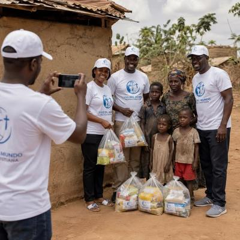

Hay una escena muy común en las redes sociales: un grupo de personas sonrientes, perfectamente identificadas con camisetas, gorras o chalecos que llevan el nombre y el logotipo de una iglesia, fundación u organización; delante de ellos, una familia extremadamente pobre, niños desnutridos o personas desplazadas; y, cuidadosamente colocadas en primer plano, las bolsas de alimentos, cajas, ropa o dinero que acaban de recibir. Además, la imagen suele estar acompañada de un mensaje de agradecimiento a «Dios», una invitación a donar, o una celebración de la «gran obra» realizada por la organización.


Pero Burkina Faso, un país de África Occidental de 24,6 millones de habitantes, acaba de dar un paso importante contra esta práctica. El 2 de julio de 2026, el Consejo de Ministros aprobó un decreto que regula las intervenciones humanitarias, prohibiendo la exposición de imágenes de personas vulnerables junto a los donativos recibidos, una medida que busca proteger la dignidad de los beneficiarios, y terminar con formas de asistencia que convierten la vulnerabilidad en material publicitario. El 7 de julio, además, el Ministerio de la Familia y la Solidaridad aclaró que todo llamado público a colecta de recursos destinada a personas necesitadas, requiere autorización previa, advirtiendo que quienes incumplan las normas quedan expuestos a las sanciones previstas en el mismo decreto.
Y es que la pobreza de una persona nunca debería convertirse en el recurso publicitario de otra, ni la solidaridad debería transformarse en espectáculo. El sufrimiento humano no debe ser presentado de forma degradante para provocar una reacción emocional que pueda transformarse en dinero, audiencia, prestigio o influencia.
Burkina Faso es un país con mayoría musulmana en un 63,8%, un 26,3% de cristianos y un 9,9% de animismo, religiones africanas y otras. Un lugar donde durante décadas, las misiones católicas y protestantes jugaron un papel determinante. Y es una actividad que todavía existe, aunque disminuida por la presencia de grupos insurgentes y yihadistas en ciertas regiones, recayendo actualmente la labor pastoral y humanitaria en líderes y misioneros locales, como los pertenecientes a órdenes como los «Hermanos Misioneros del Campo».
Y por lo general hemos visto cómo en los diferentes países, los misioneros cristianos han transformado la ayuda al necesitado en una poderosa herramienta de promoción institucional. En todas partes es muy común ver miembros de una iglesia muy bien identificados con su organización, tomándose fotos o videos junto a las personas que reciben la ayuda, para después publicarlos con comentarios como: «Nuestra iglesia llevando bendiciones a los más necesitados», «Seguimos haciendo la obra de Dios» o «Gracias a todos nuestros hermanos que hicieron posible esta misión». Y, naturalmente, la invitación a seguir contribuyendo. Por supuesto, el problema no es ayudar; es tener que demostrar así que quien entrega la ayuda es una institución «buena» a la que hay que seguir apoyando.
Además, el caso de los cristianos resulta muy contradictorio, al ignorar aquella enseñanza de Jesús: «Que tu mano izquierda no sepa lo que hace tu derecha» (Mateo 6:3). Pero a ellos ya no les basta con ayudar, tienen que colocar el logotipo de la iglesia a las bolsas de alimentos, y tienen que fotografiar o grabar la ayuda. Parece no interesarles tanto que la persona necesitada reciba la asistencia, porque lo más importante es que se registre la escena para divulgarla. Y lo cierto es que las redes sociales han agravado el problema, porque han convertido al necesitado en contenido. Porque un niño llorando genera más interacción que una estadística; una familia hambrienta produce más reacciones, y cuanto más dramática sea la imagen, más llamativa la escena que, además, termina monetizando.
La decisión de Burkina Faso, además de cuestionar ese modelo que transforma la vulnerabilidad humana en mercancía digital, tiene una dimensión que trasciende la asistencia humanitaria. Incorpora también la obligación de dirigir el 60% de los financiamientos hacia la recuperación temprana y la autonomía, con el fin de reducir la dependencia de la asistencia prolongada. Y esto es muy importante, porque no es lo mismo mantener indefinidamente una relación entre benefactor y beneficiario, que ayudar a una persona a recuperar las condiciones necesarias para sostenerse por sí misma. Aunque por supuesto, a esas supuestas instituciones de ayuda humanitaria (incluidas las religiosas) lo que les conviene es satisfacer sólo necesidades momentáneas, para mantener la dependencia de las personas vulnerables.
Y por otra parte, el decreto también promueve la adquisición local de los bienes destinados a las poblaciones asistidas, lo que tiende a fortalecer los productores y comerciantes locales, contribuyendo a la recuperación económica del país.
Por lo demás, ¿será posible mantener este esquema, tomando en consideración que las instituciones de ayuda alegan que necesitan de la publicidad para mantener el flujo de donaciones que reciben? En el caso del decreto de Burkina Faso, cuando se requiere material visual exclusivamente para registros internos o justificaciones institucionales autorizadas, debe obtenerse el consentimiento formal, previo y por escrito, de los beneficiarios. Pero además, si la entidad de beneficencia necesita utilizar imágenes de la situación de pobreza en el país para recaudar fondos, deberá primero estar registrada y acreditada bajo el nuevo marco regulatorio del Estado, y solicitar una autorización previa al Ministerio de la Familia y la Solidaridad.
Obviamente, ninguna legislación es perfecta. Burkina Faso está gobernado actualmente por una junta militar, por lo que cualquier ampliación del control estatal sobre organizaciones y campañas de solidaridad merece vigilancia en materia de transparencia, libertad de asociación y rendición de cuentas. Pero estas cautelas no invalidan el principio central de la reforma.
Nosotros no dudamos que otros países deberían estudiar seriamente las medidas adoptadas por Burkina Faso para proteger a las personas vulnerables frente a la explotación publicitaria de su propia desgracia. Es correcto que las organizaciones demuestren en qué gastan las donaciones, pero sin utilizar a los necesitados como prueba fotográfica en favor de su imagen. Y las iglesias deberían ser especialmente cuidadosas y transparentes, sometiéndose a toda clase de auditoría. Si realmente creen estar siguiendo las enseñanzas de Jesús, deberían comenzar por obedecer una de las más sencillas: ayudar sin convertir al necesitado en generador de beneficios para su organización.
Una sociedad verdaderamente humanista debería aspirar a algo elemental: que nadie tenga que exhibir su pobreza para demostrar que merece ayuda, y Burkina Faso ha colocado esa idea en el debate público. Ahora otros países deberían al menos estudiarla.
[Godless Freeman]
Comentarios
Comments powered by Disqus